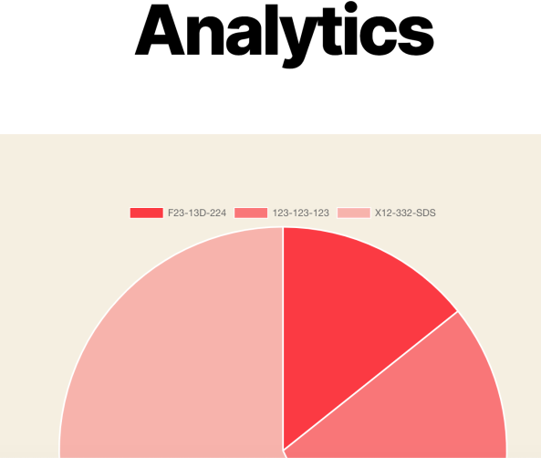

MY PROJECTS
The are the projects are the projects I have completed, or am currently working on.


![Artifical Neural Network to predict Pan Evaporation.
I developed A neural network to predict pan evaporation, using over 1000 sample data entries. The ANN was programmed in python and utilised graphing modules
to provide a visualisation for the error decrease over a given number of epochs. The number of hidden layer nodes was programmed to be flexible, and the ANN made use of backpropagation, annealing, momentum and a bold driver.
The error rate was depicted using the root mean squared error formula.](ANNpicture.png)
Currently Studying at Loughborough University
This site is coded and maintained by me.
Programming and design experience:
PYTHON
JAVA
SQL
SWIFT
UI/UX DESIGN
ANDROID AND IOS APP DEVELOPMENT
WEB DEVELOPMENT LANGUAGES (HTML, CSS)
AI DEVELOPMENT
The are the projects are the projects I have completed, or am currently working on.